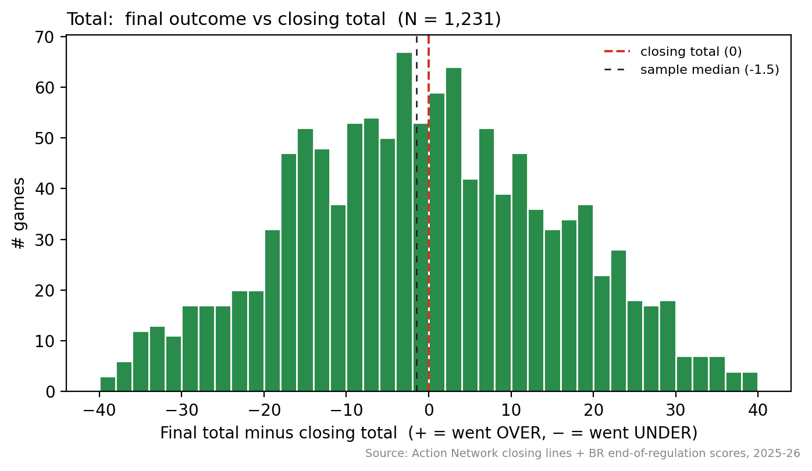
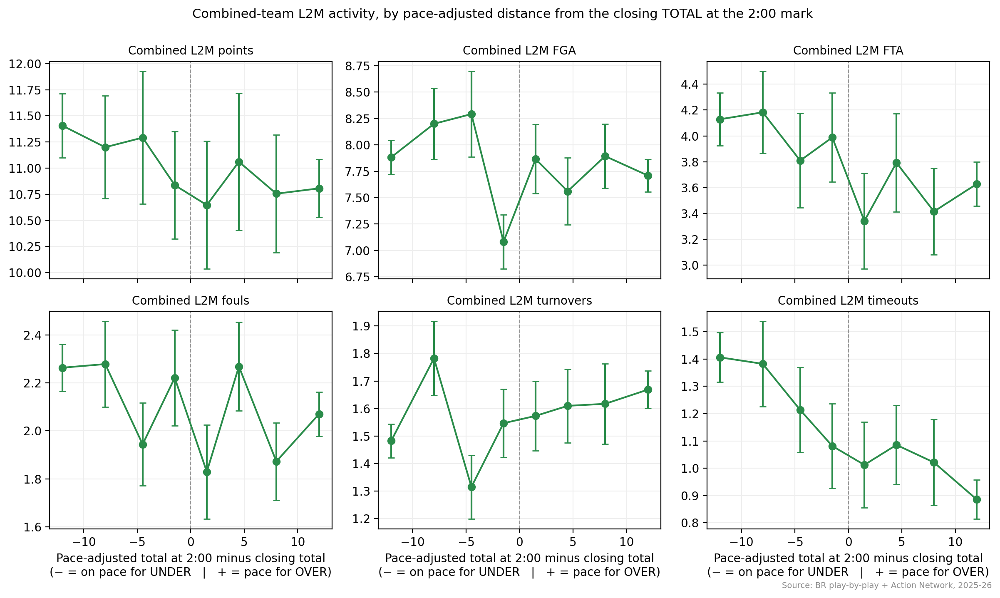
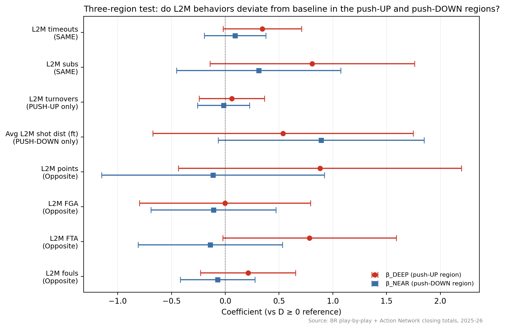

Point Shaving in the NBA: Fact or Fiction? A Behavioral Test on 2025-26 Regular Season
Motivation
Point shaving is one of the oldest suspicions in American sports. A player or referee, the story goes, doesn’t need to throw a game outright — just nudge the final margin enough to flip which side of the closing line the bettors land on. The most famous documented case is the Tim Donaghy referee scandal of 2007. Whether shaving exists at any systematic level is harder to study than it looks: a signal at the margin would be hidden inside the normal end-of-game scramble of intentional fouls, timeouts, and clock management.
The empirical literature on this question (Wolfers 2006; Bernhardt & Heston 2010; Paul & Weinbach 2009; Borghesi 2015; Gregory 2018) examines the distribution of final outcomes around the closing line and finds no widespread shaving signal. This post takes a different angle: rather than test final-outcome distributions, it uses in-game behavioral data — L2M play-by-play counts of points, shots, free throws, fouls, turnovers, timeouts, and substitutions — and asks whether behavior deviates from baseline near the closing total in the direction shaving would produce. The test runs on the over/under market with a design tailored to a basic fact about shaving incentives: the direction of pressure (push the over vs push the under) varies game by game, so the right test is not a single fixed-direction regression.
Headline result. Games whose live total at 2:00 is well below the closing total show statistically detectable elevation of L2M disruption activity — substitutions, timeouts, and free-throw attempts — compared to games where the over is already locked in. The pattern is what a push-the-over shaving operation would produce. After adding a control for game pace through the first 43 minutes the effects shrink to statistical marginality but do not vanish. The right reading is a correlation worth documenting, not a causal claim about corruption.
Data
The panel is every regular-season and play-in game of the NBA 2025-26 season for which I could match a closing line to play-by-play: 1,231 games with full play-by-play across all 30 teams. Sources:
- Closing odds — Action Network public JSON feed, 6 US sportsbooks. I use DraftKings as the primary line.
- Play-by-play — Basketball-Reference. Every event in the last 5 minutes of regulation (and the last 2 minutes separately) is classified into scoring, shot attempts and makes, free throws, rebounds, assists, steals, blocks, turnovers, timeouts, substitutions, and fouls.
- Game meta — Basketball-Reference box scores: three officials per game, attendance, arena, inactive players, head coach.
All scores below are end-of-regulation (overtime excluded). Define the live-state running variable D = total_at_2min − closing_total.
Descriptive evidence
Start with the distribution of the final total relative to the closing total. The Wolfers-style shaving hypothesis predicts a missing or excess mass on one side of zero.

Bell-shaped around the closing total, with a sample median of −1.5 — a small bias toward the under that is a well-documented feature of NBA closing totals. No visible Wolfers-style anomaly.
Combined-team L2M activity across pace-adjusted bins of the total:

Combined L2M FGA shows a dip in the bin just below the line (~7.1 at D = −1.5 vs ~8.3 a bin further out), and combined L2M turnovers rises monotonically with D rather than spiking near zero. Read together with FTA — which trends similarly — the pattern is not “fewer possessions near the line” (turnovers don’t spike) but “same possessions, different mix,” consistent with more intentional fouling in close-to-line games. Whether anything anomalous survives in regression form with controls is the question for the next section.
The three-region behavioral test
The right test of the direction-varying shaving hypothesis splits games into three regions of D:
| Region | D-range | Push-UP shavers | Push-DOWN shavers | N |
|---|---|---|---|---|
| DEEP | D ≤ −10 | active | dormant | 642 |
| NEAR | −10 < D < 0 | dormant | active | 240 |
| OVER (reference) | D ≥ 0 | dormant | dormant | 311 |
For each L2M outcome y, fit:
yg = βDEEP · 1[Dg ≤ −10] + βNEAR · 1[−10 < Dg < 0] + Xg'θ + εg
where X = (home margin at 2:00, closing total, live total at the 5:00 mark of Q4 [pace through the first 43 minutes], home/away team FE, lead-official FE) and reference category is the OVER region. HC1-robust SEs. The live-total-at-5:00 control is the key piece for separating shaving from the mechanical “low-pace games naturally have more dead-ball action” alternative: conditional on how slowly a game has been played up to the 5:00 mark, the DEEP indicator captures only deviations from that established pace.
Outcomes classify into four types under the direction-varying shaving hypothesis: SAME-direction outcomes (both push-UP and push-DOWN want them ↑) should show elevation in both DEEP and NEAR; push-UP-only outcomes only in DEEP; push-DOWN-only only in NEAR; opposite-direction outcomes can go either way depending on which operation dominates.
| Outcome | Type | βDEEP (SE) | βNEAR (SE) |
|---|---|---|---|
| L2M timeouts | SAME | +0.344 (0.186)† | +0.092 (0.146) |
| L2M subs | SAME | +0.809 (0.486)† | +0.311 (0.389) |
| L2M turnovers | push-UP only | +0.062 (0.155) | −0.016 (0.124) |
| Avg L2M shot dist (ft) | push-DOWN only | +0.536 (0.618) | +0.892 (0.489)† |
| L2M points | opposite | +0.881 (0.671) | −0.114 (0.529) |
| L2M FGA | opposite | −0.003 (0.406) | −0.110 (0.296) |
| L2M FTA | opposite | +0.784 (0.411)† | −0.139 (0.343) |
| L2M fouls | opposite | +0.212 (0.225) | −0.070 (0.177) |
| Each row from a separate regression with reference category D ≥ 0 (OVER region). Controls: home margin at 2:00, closing total, live total at the 5:00 mark, home/away team FE, lead-official FE. HC1-robust SEs. N = 1,193 per regression. *** = p < 0.001; ** = p < 0.01; * = p < 0.05; † = p < 0.10. Without the live-total-at-5:00 pace control, the timeouts and subs DEEP coefficients are statistically significant at p < 0.001 (+0.50 and +0.91 respectively). The pace control absorbs roughly 15–30% of the point estimate and roughly doubles the standard errors, leaving the same direction at marginal significance. | |||

Three patterns are worth flagging.
The DEEP region (push-UP zone) shows marginal-but-meaningful elevation in disruption-of-play outcomes. Combined L2M timeouts are about 0.34 higher per game in the DEEP region than in the OVER reference, and combined L2M substitutions are about 0.81 higher. Both effects are large in magnitude (a roughly 30–35% increase over the OVER-region baseline) and consistent across the SAME-direction prediction, though they fall to p ≈ 0.06–0.10 once the live-total-at-5:00 pace control is included. Combined L2M FTA is also marginally elevated in DEEP (+0.78, p = 0.06). These are the disruption outcomes the directionless-shaving prediction targeted.
The NEAR region (push-DOWN zone) shows one consistent effect: games sitting just below the closing total have an average L2M shot distance about 0.9 ft longer (p = 0.07) than OVER-region baseline games. Longer shots are lower-percentage; this is consistent with deliberate bad-shot selection by a push-DOWN operation. None of the disruption outcomes (timeouts, subs) are elevated in NEAR, so the SAME-direction prediction is only half borne out.
The push-UP-only prediction on turnovers fails. The framework predicted push-UP shavers would create extra turnovers (own team coughs up the ball, opponent scores in transition). The data show essentially zero effect on combined turnovers in DEEP (+0.06, n.s.), so this particular signal isn’t there.
Conclusion
This post finds something — a correlation, not a causal claim about shaving. Games whose live total at 2:00 of regulation is well below the closing total show a meaningful elevation of L2M disruption activity (timeouts, substitutions, free-throw attempts) compared to games where the over is already locked in. Games sitting just below the closing total show longer L2M shots than baseline. Both patterns are in the directions the direction-varying-shaving model predicts. After a control for game pace through the first 43 minutes the effects sit at marginal significance — same direction, similar magnitude, wider standard errors. That is the descriptive headline.
The reason this is a correlation rather than a causal claim is that the same DEEP-region pattern is consistent with at least three non-corruption explanations: (i) low-total games at 2:00 are slow-pace games with more dead-ball action than the pace control fully absorbs, in which case the residual elevation in disruption is mechanical; (ii) teams down by an unusual amount on pace may switch to a more open style in the L2M to give players touches or to draw fouls in the bonus, conditional on the live margin; (iii) refs may officiate clutch-game endings differently in low-pace games for reasons unrelated to gambling. The data here can’t distinguish these from a push-UP shaving story. Distinguishing them would require additional design — a richer pace specification, a referee-by-referee split to see whether the effect concentrates in a few crews, or a game-by-game look at the DEEP cell to see whether the games driving the result are clustered in suspicious ways. Those are natural next steps and what the panel built here is designed to support.
Where this sits relative to the prior literature: the post-Wolfers consensus that widespread shaving is not detectable in standard outcome-distribution tests still holds; the behavioral approach used here doesn’t overturn it. What it adds is a region-specific behavioral correlation that the outcome-distribution tests would miss, and that the no-shaving consensus should at least acknowledge before treating the question as fully settled.
None of this rules out shaving by specific players or specific officials in individual games. The Donaghy case is a reminder that “the league average is clean” is a different statement from “no one is shaving.” A targeted investigation of individual officials, applied to NBA referee-level fixed effects with the L2M Report grading data, is the natural next step.
A second caveat worth flagging: this analysis uses only the closing line as the reference, not the in-play lines that sportsbooks update continuously through the game. Three reasons. First, pre-game bets settle at the closing number, not the live one; a shaver paid through a pre-game wager is motivated by the closing line regardless of where the in-play line drifts. Second, roughly 70–80% of NBA handle is placed pre-game, so the closing line is where the rational shaving target lives. Third, the live line is mechanically derived from the current scoreboard — using it as the running variable would create a simultaneity problem with the very L2M behavior we are trying to explain. A hypothetical syndicate operating exclusively on in-play lines would not be detected by this design.